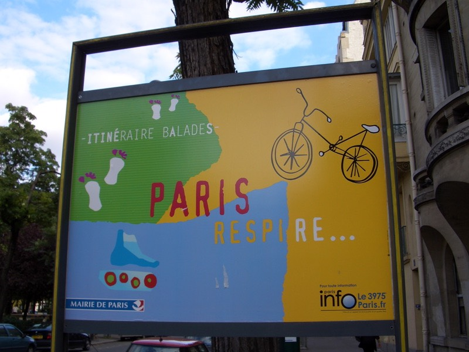

調查報告NO.SD5317-1號
八月九日
日本長崎原子彈爆發60週年紀念日公休的真相
被關在旅館，睡了一覺醒來之後，小叮噹又從抽屜中跑了出來。
『大雄，還有什麼需要我幫忙的嗎？』
『嗯，雖然不是很想麻煩你這隻黑叮噹，但有個很大的問題需要你幫我解決，房間的門被反鎖了，有解嗎？』
『那還不簡單，看我的，任意門∼』（小叮噹只喊口號卻不拿出道具。）
『現在旅館的門已經變成任意門了，看你想去哪邊都可以，試試看吧∼！』
『是不是這麼神奇？那我想去......巴黎！』
語畢，一轉門把，果然輕鬆的打開了門，門外是巴黎的街道景致，這真是太神奇啦！
一個箭步就跳到門外去∼

『小叮噹！你真是太厲......』
（話還沒說完，就聽到碰的一聲，門自己關上了。）
旅館的門呢，通常會自己關起來，而且關起來之後就自動上鎖，沒有鑰匙的話，是不可能開鎖的。
前一秒鐘還躺在床上的我，下一秒鐘已經穿著睡衣漫步在巴黎街頭。
像個遊魂一樣，隨著人群漂流著，漫無目的的走著，如同行屍走肉。
然後，被櫻桃丸子（SaKuRa MaRu）給撿了回家，在那邊受到了良好的照顧，
可口的美食、柔軟的床墊，總算不必流落街頭當遊民。
櫻桃丸子是櫻桃小丸子的長大成人版，有多少人會關心漫畫人物成長之後的情況呢？
皮卡丘老了會不會被小智拋棄？小新老了會不會得癡呆症？小丸子，長大了還能那麼樣的天真無邪嗎？
我想是的，每個人都有自己所追求的夢想，只是有沒有實踐夢想的行動罷了。
若你能勇敢的，不顧一切的去實現自己的夢想，不論它在別人眼中看起來是多麼的荒謬，
也不論它是否能成功，至少你試過去實踐它，沒有讓夢想只是空想。
櫻桃小丸子，變成櫻桃丸子的時候，走上了美術這條路，隻身在巴黎學藝術。
相當艱辛的路程，她能，為什麼有那麼多人能找藉口來推拖自己的夢想說太困難？
藉口這種東西，是多到用不完的，為什麼不能誠實的面對自己內心的渴望？
跳脫世俗的眼光，即便這是一件及不容易的事情，但還是有人能不顧一切的做到。
櫻桃丸子給了我許多感觸，夢想是廉價而空虛的，為有實踐才是無價且艱辛。
放馬後砲是無異議的舉動，美國等到用原子彈轟炸了長崎之後，才開始空投傳單。
『本國已經研發了強力炸彈，警告居民盡快撤離該城市，不然將遭受嚴重損害。』
老是動不動就把『如果那時候....』、『要是我怎樣....』、『假使有一天....』掛在嘴上的。
是名副其實的弱者，只有想法而沒有行動，USELESS！
為了哀弔這場歷史悲劇，怎能有不公休的道理。
真相往往是不被採信的，即使我說得如此誠懇、令人動容，但會有多少人相信這兩天發生的事呢？